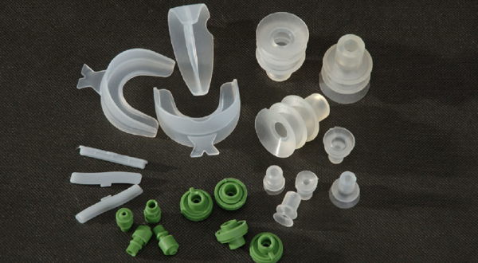
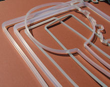
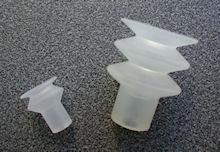

Sviluppati inizialmente per scopi bellici tra il 1935 e il 1941, i siliconi sono oggi materiali d'eccellenza che uniscono caratteristiche organiche e inorganiche, offrendo prestazioni superiori a qualsiasi gomma tradizionale.

Proprietà Straordinarie
Il silicone liquido si distingue per una versatilità ineguagliabile:
- Stabilità Termica: Mantiene le proprietà da -50°C a +260°C.
- Atossico e Inodore: Inerte fisiologicamente, ideale per uso medico e alimentare.
- Resistenza: Inattaccabile da UV, pioggia e immersioni prolungate.
- Isolamento: Ottimo isolante elettrico.

LSR Bicomponente "Platinico"
Il silicone LSR (Liquid Silicone Rubber) con catalizzatore al platino è il più puro in assoluto. Viene iniettato freddo in stampi riscaldati a 160-200°C per la reticolazione.
Il Post-Curing: Per garantire l'idoneità al contatto alimentare e medicale, i pezzi finiti vengono riscaldati in forno a 210°C per 4-5 ore. Questo processo elimina ogni residuo volatile e migliora drasticamente le caratteristiche meccaniche.

Tecnologia Senza Bave e Applicazioni
Utilizziamo moderne presse ad iniezione per ottenere componenti esenti da bave, pronti all'uso. Dalla variante platinica a quella perossidica, offriamo anche soluzioni di costampaggio con metalli e termoplastici.
I campi di impiego sono in continuo incremento:
Prima Infanzia e Cucina: Tettarelle, stampi antiaderenti.
Medicale e Subacquea: Articoli antibatterici e maschere ad alta tenuta.
Industria: Componenti per automotive, aeronautica ed elettronica.